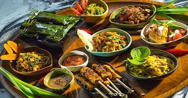

BERITA

Kuliner tradisional Indonesia adalah semua jenis masakan yang berasal dari berbagai daerah di seluruh Negara Kesatuan Republik Indonesia.
Resep dan cara pembuatan kuliner tradisional biasanya bersifat turun temurun.
Rasa kuliner tradisional yang khas dari satu daerah akan berbeda dengan daerah lainnya.
Itulah kenapa kuliner tradisional memiliki banyak keunikan dan kaya akan aneka rasa.
baca selengkapya >>